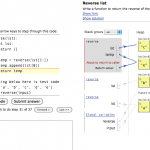

A Browser-Based Programming Tool That's Better Than Many Desktop Tools
I don’t know who Philip Guo is, but I think he’s amazing–at least, the software he creates is. Like several other tools, his Online Python Tutor lets you write and run code in the browser; unlike others, though, his allows users to step forward and backward through program execution, and displays simple, but effective, box-and-arrow visualizations of the program’s state as it evolves:

14 years after the publication of Stasko et al’s massive survey of software visualization, most IDEs still don’t do the latter. There are some good reasons (scalability and extensibility) and some bad ones (programmers can be surprisingly suspicious of anything new when it comes to their tools). My question is, will programming-for-everyone tools like Scratch allow people to create their own visualizations of their programs? I.e., will their be introspective hooks so that I can not only say, “Animate this picture,” but also, “And display the stack, my variables, and my definitions in the following way as you do so”? I wouldn’t expect the average eight-year-old to build new program visualizations, but (a) I’m frequently surprised by what non-average eight-year-olds can accomplish, and (b) who knows what those eight-year-olds might do when they’re sixteen or thirty-two if they’ve learned that tools are hackable too?